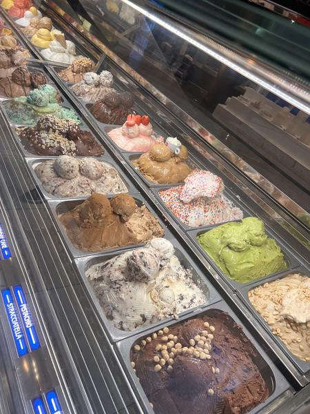
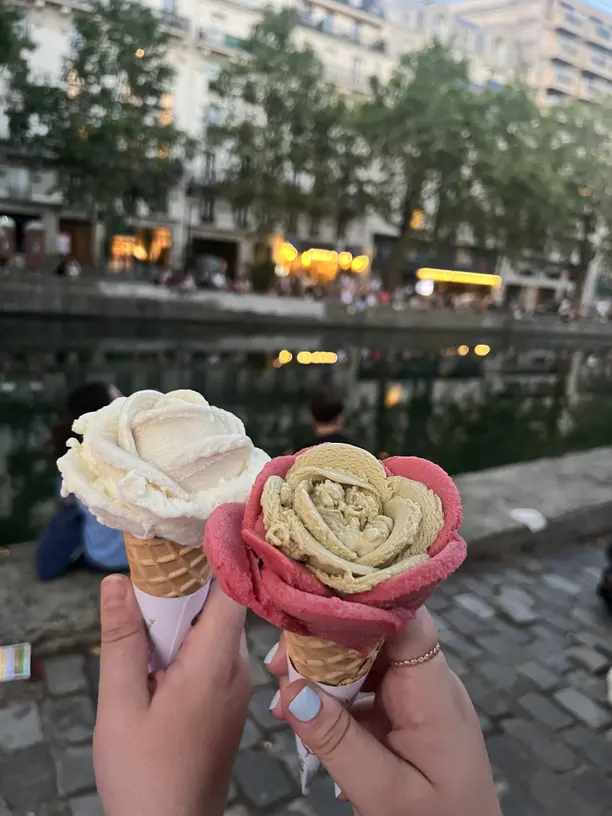

Lore
Gelato originated in Italy, though its exact origins are unclear. Its roots trace back to 3000 B.C. when Asian cultures mixed ice with flavorings—a practice later adopted by Egyptians and eventually Italians.

Gelato evolved significantly during the Italian Renaissance, with figures like Cosimo Ruggeri and Bernardo Buontalenti refining early forms of the dessert for the elite. The first public serving of Gelato came in 1686 when Francesco Procopio Cutò opened Café Le Procope in Paris.

Since then, Gelato has gained popularity in the 20th century with the invention of the ice cream machine and further advancements by Bruto Carpigiani. By the 1950s, it had become a signature Italian dessert, continuing to evolve with technology.